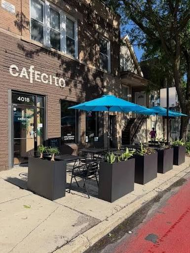

Cafecito
Honden zijn zowel binnen als op het terras welkom. De stops bevinden zich in de binnen stad.
Lees meerEen wandeling met je hond en heb je een wel verdiende pauze nodig en een kop koffie om jouw energie weer op te bouwen? Maar niet elk terras vind dat prima. Op kwispelkoffie lees je waar je met je hond terecht kunt voor een lekkere kop koffie.
Bekijk de koffiestops

Honden zijn zowel binnen als op het terras welkom. De stops bevinden zich in de binnen stad.
Lees meer
Honden zijn zowel binnen als op het terras welkom. Met lekkere biologische lunch voor mensen beschikbaar.
Lees meer
Honden zijn zowel binnen als op het terras welkom. Gys heeft een breedt asortiment aan biologische gerechten.
Lees meer